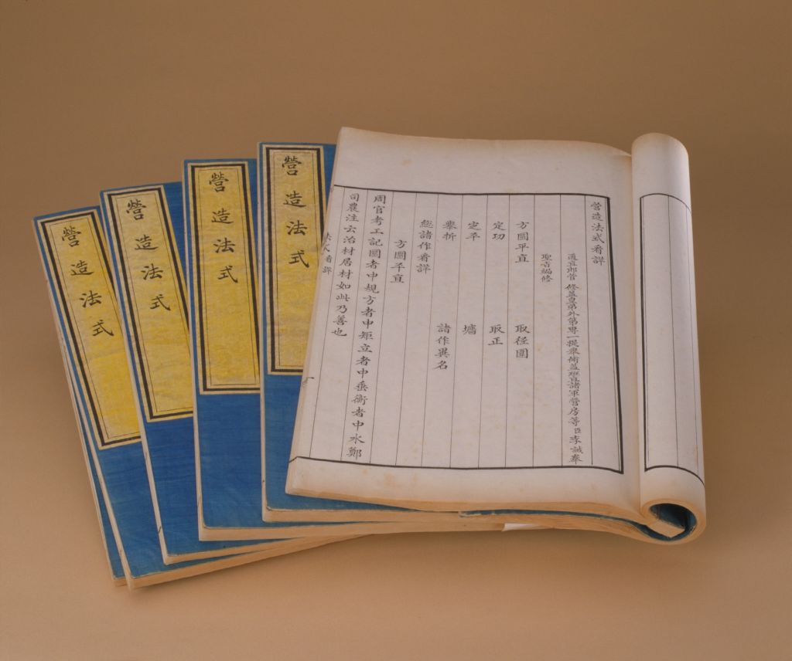

现代建筑师
李先生，您的《营造法式》被梁思成先生誉为中国建筑的“文法课本”。我最惊叹的，是您创立的“以材为祖”的模数体系——将“材”分为八个等级，让所有构件都有了统一的标准。这一思想，比西方现代建筑模数化早了近千年。请问您当年是如何产生这一灵感的？
正在调取宋代营建算法...

以材份为纲，以规矩为度，以匠心为骨
解码宋代官式建筑的营造密码，重现大宋木构的巅峰风华
卷首对话
北宋将作监丞李诫，与当代建筑师在同一片营造精神中相逢。古法不是尘封的回声，而是今天依旧发光的秩序与创造力。
李先生，您的《营造法式》被梁思成先生誉为中国建筑的“文法课本”。我最惊叹的，是您创立的“以材为祖”的模数体系——将“材”分为八个等级，让所有构件都有了统一的标准。这一思想，比西方现代建筑模数化早了近千年。请问您当年是如何产生这一灵感的？
灵感并非凭空而来，而是源于对混乱的深刻体会。我分管营造十余年，深知各地匠人各凭经验、用料尺寸参差的弊端。若要杜绝虚报、统一法度，就必须建立一套“以材为祖”的标准化体系。我将“材”分为八等，所有构件尺寸皆为材的倍数——殿阁用一等材，亭榭用八等材，一材定天下，万变不离其宗。
确实，您用“材”这一基本模数，建立了一套完整的参数化设计系统。此外，我注意到《营造法式》中有大量篇幅规定了“功限”和“料例”——用今天的话说，就是工时定额和物料标准。这在当时是否也是一场管理上的革命？
正是。我编纂此书的核心目的之一，便是“关防工料，节省开支，保证质量”。过去官家在工程上虚耗严重，官吏与匠人勾结，多报工时、虚增物料，国库流失无数。我将十三个工种的用工时限、用料规格一一写明——刻一平方米花草纹饰需三天，一根大梁用木料若干、砖石几何——有了这些明确标准，贪墨者便再难从中舞弊。这不仅是技术规范，更是一套防腐败的管理制度。
您说得太好了。我读您的书时，还感受到一种更深层的东西——不仅是技术和制度，更有一种建筑的哲学。您提出“中和为体”“定分为用”“权变为法”，这三点之间是什么样的关系？
建筑，终究是为人而造、与天地相伴的。所谓“中和为体”，说的是建筑要“适形而止”，比例和谐，与自然相融，不可一味求大求奢。“定分为用”，则是指营造须循礼制——君、臣、民各有其度，建筑便是这种秩序的物化。而“权变为法”，是指在核心规矩不变的前提下，允许因地制宜的灵活变通。三者一体，既讲规则，又有弹性，是中国建筑之所以千年传承的根本。
受教了。您以一卷法式，立千年之规：模数化让营造有度，功限制让管理有据，中和之道让建筑有魂。我们将以当代之力，让这份智慧在新时代继续发光。
一场席卷北宋朝廷的工程腐败风暴，意外地催生了中国最伟大的建筑法典
北宋中晚期，王朝的大兴土木达到巅峰。宫殿、王府、太庙、官署、城墙、河道…… 工程一个接一个上马，国库的白银像流水一样往外淌。但没有人能说清，这些钱到底花在了哪里。
问题出在标准上。偌大一个王朝，竟然没有一部统一的建筑规范。 工匠们各凭经验，官吏们随意定价。造价可以相差数倍。负责工程的官吏与工匠暗中勾结，虚报物料、夸大工时， 从朝廷的银库里源源不断地抽取着民脂民膏。
更可怕的是，没有人能戳穿这个谎言。因为没有标准—— 没有谁说得清一根梁木应该多粗，一堵墙应该多厚，一座大殿应该用多少工。 腐败，就在这片制度的真空地带里，疯狂生长，肆无忌惮。
王安石最先看清了这沉疴的根源。熙宁年间（1069-1085），他推行新法，将规范天下工程营造、统一工料预算定额，作为「理财节用」的核心举措之一。他要让每一文官银都花在明处，让每一根木料都有据可查。
纵然变法最终因保守派的反扑几经起落，王安石罢相而去，诸多新法被废，可那一颗「营造标准化」的种子，已然深深扎进了大宋王朝的制度肌理里。无论朝堂风云如何翻覆，根治工程贪腐、规范营造法度的初心，从未被磨灭。
命运选中的，是一个叫李诫的人。 崇宁二年（1103年），这部由将作监丞李诫奉敕编纂的巨著——《营造法式》， 经宋徽宗批准正式刊行天下。
它是中国现存最早、最完整、最系统的官修建筑技术典籍。 比欧洲同类标准早了数百年。它用统一的术语、精密的模数、严格的标准， 从根本上杜绝了虚报与欺诈的可能。这是一把终结腐败的利剑，更是一座文明的丰碑。
—— 当腐败吞噬了国库，
当谎言遮蔽了真相，
一位工程师挺身而出，
用一部标准，终结了千年的混乱。
他不是坐在书斋里的文官，而是一位深入工地的科学家
李诫（约1060—1110），字明仲，郑州管城人，出身官宦世家。 他的父亲李南公是朝廷重臣，哥哥李譓官至龙图阁直学士。 这样的家世，本可以让他走一条轻松的仕途——读书、应举、做官、享福。
但他偏偏选择了一条最"接地气"的路。将作监——这个掌管全国工程营造的机构， 需要和木头、石头、泥土打交道，需要下工地、爬脚手架、检查每一根柱础是否规整。 在当时的官场，这不是一个"清贵"的差事。但李诫不在乎。 他在这个机构里一干就是十余年，亲自督造了五王邸、辟雍、尚书省、太庙等数十项大型工程。 这些浸满汗水的实践经验，使他不是纸上谈兵的理论家，而是一位真正"手上有泥"的工程师。
更难得的是，他不仅是工程师，还是艺术家。他擅长书法，精于丹青，博学多识，著有《续山海经》《古篆说文》《琵琶录》等多部著作，横跨历史、文字、音律诸多领域。这种文理兼修的气质，最终成就了一部既有精密技术、又有文化底蕴的千古奇书。
官宦世家将作监丞实践经验文理兼修在那个没有CAD、没有建筑系的年代，编写一部系统的建筑规范，简直是天方夜谭。 但李诫的方法，至今读来仍令人叹服——
他从《周礼·考工记》到前朝工程档案，系统查阅了大量典籍。他要知道古人是如何规定的，历代的营造制度是如何演变的。这种追根溯源的研究方法，放在今天就是学术论文的"文献综述"。
他深知真正的知识藏于民间工匠之手。于是他走访各地，向那些头发花白的老匠人请教，将世代口传心授的"不传之秘"一一记录整理。这些工匠的名字未曾载入史册，但他们的毕生智慧，被李诫永久地保存了下来。
他不是简单记录，而是结合自己十余年的督造实践，逐一验证、修正每一条规范。确保它经得起工地的检验，而不是停留在纸面上的空谈。这种"从实践中来，到实践中去"的作风，正是现代工程学最核心的精神。
绍圣四年（1097年），李诫奉旨重修《营造法式》。他把十余年的工程实践、数百位匠人的口传心授、 数十部典籍的考据成果，全部熔铸于一炉。元符三年（1100年），全书完成定稿，进呈御览。 崇宁二年（1103年），经宋徽宗批准，这部三十四卷的巨著正式刊行天下。
⸻ 李诫生平关键节点 ⸻
生于郑州管城，出身官宦世家。
点击查看详情恩补入仕，任郊社斋郎，初涉官场。
点击查看详情调任将作监主簿，正式进入皇家营造机构。
点击查看详情升任将作监丞，掌国家营造事务。
点击查看详情奉旨重修《营造法式》，开启"法典创作"。
点击查看详情全书定稿进呈御览，前后历时三载。
点击查看详情《营造法式》刊行天下，成为官式营造准绳。
点击查看详情病逝于虢州任上，留下东方木构的千年范本。
点击查看详情一部拥有词典、文法、定额、标准和图纸的完整工程体系
《营造法式》共三十四卷，分为五个层次。学者张十庆先生用"语汇-文法-释读"的概念，精准概括了它的体系。我们可以把它想象成一部完整的建筑工程操作系统。
统一各时期建筑构件的名称和术语。在此之前，同一种构件在不同地方有不同的叫法，工匠之间沟通困难，审核官员也难以核查。有了"总释"，从汴京到岭南都用同一套语言。没有统一术语，就没有统一标准。
全书核心。详细规定了壕寨、石作、大木作、小木作、雕作、彩画作、砖作等十三个工种的营造规范。每一个工种的每一道工序、每一个构件的尺寸和比例，都有明文规定。这是中国乃至世界上最早的系统化建筑技术标准。
明确所有工种完成工作所需的时间。比如"雕刻一平方米花草纹饰，普通工匠需要三天"。这意味着，不管谁来施工，用工量都有据可查。制度的意义在于，它让"虚报工时"变得不可能。
规定各工种的用料规格和数量。一根大梁用多少木料，一堵墙用多少砖石，都有精确的标准。官员不能再以"多用了料"为由虚报开支。
六卷图示，绘制平面图、断面图等直观图示。在文字尚可篡改的年代，图纸是最难造假的证据。这也是整部书中最受后世推崇的部分——它让标准变得"可见"。

这部跨越九百年的古籍，以其详尽的图文记载，成为了一部永恒的建筑教科书。三十四卷的全书，每一卷都凝聚着李诫对营造艺术的深刻理解与规范化追求。
从现存的版本中，我们可以看到古人如何用墨笔与纸张，将复杂的建筑知识转化为清晰的文字与图示——这正是"标准化"的最好诠释。
从术语的统一，到施工定额的制定，再到图纸的绘制——
李诫用九百年前的智慧，构建了一套可操作的、闭环的、防腐败的工程管理体系。
这就是中国古代建筑标准化最大的成就。
八个等级，一套模数。选择材等，建筑的万千构件便有了尺度。
在《营造法式》出现之前，工匠们各凭经验，同样的构件在不同工地尺寸各异，无法批量生产，也无法质量验收。李诫需要一套方法，让所有构件的尺寸都标准化——这就是材份制。
材份制的核心逻辑极为简洁：把建筑所有构件的尺寸，都变成"材"的倍数或分数。所谓"材"，就是一种标准化的木构件断面。殿堂建筑的柱径，标准为材高的 2 倍（两材），斗拱出挑的长度是材高的3倍。只要确定了"材"的等级，整座建筑的比例就自动锁定了——就像今天的参数化设计软件，输入核心参数，所有构件便自动生成。
参数化设计模数系统以材为祖标准化生产👆 选择材等，观察建筑比例变化
一等材（高9寸/宽6寸）—— 用于最高等级的九至十一间大殿
一材定尺度，八等分尊卑。
材份制以科学统一的模数逻辑，规范了宋代所有官式建筑的营造尺度，
让万千木构构件皆有章法、尺寸有度。
其标准化营造，模数化造物，铸就了华夏古建独有的秩序之美。
层层出挑，四两拨千斤——斗拱是如何成为中式建筑的灵魂的
在《营造法式》中，斗拱的正式名称叫"铺作"——"铺"是层层铺垫，"作"是动作与结果。 它位于柱子和屋顶之间，是整座木构建筑中最复杂、最精密的受力结构。
四铺作（出 1 跳）是最基础的样式；《营造法式》所载最高规格为八铺作（出 5 跳），而现存宋代地面建筑的最高实物规格，为七铺作（出 4 跳）。
铺作=斗拱出跳数+3四至八铺作这张线框透视图清晰地展示了斗拱从下至上的组装逻辑：从一根柱子开始，逐层增加构件， 最终形成一个庞大精巧的结构，承托起最上方的屋檐。它揭示了斗拱"层层铺垫、逐层出挑"的构造密码。

这张图最直观地说明了一个核心道理：斗拱不是装饰品，而是一套精密的传力系统。 每一层栱和昂的咬合，都是为了将屋顶的重量一步步传递到柱子上。
这张剖面示意图展示了斗拱从柱础到屋檐的逐层搭建过程。图中用文字标注了从"一铺作"到"八铺作"的层级， 红色线条标注了荷载如何从屋顶通过层层斗拱传递到柱子的路径。

铺作的层数越多（铺作数越高），出檐越深远，建筑等级也越高。这套"层层叠加、向外悬挑"的构造逻辑， 在力学上是巧妙的荷载传递，在美学上是收放自如的韵律。
下面这件模型是一座宋代风格的转角铺作，提取了六铺作或七铺作中最外跳的部分。 拖拽鼠标可以旋转视角，滚动滚轮可以拉近拉远，试试从不同角度观察它的结构之美。
层层出跳的华栱与昂，仿佛一尾游鱼展开的鳍与尾，在空间中凝固成动态的平衡。
这是中国古建筑独有的美学：力与美的统一。
一本书如何被破译，如何影响八百年，如何成为中华建筑的基因
1919年，朱启钤在尘封的故纸堆中重新发现了《营造法式》，并自筹资金刊印。这本书的重见天日，震动了整个中国学术界。
梁启超称其为"吾族文化之光宠"，
国际学界更将其誉为"整个中古时期世界上最完备的建筑学专著"。
在它诞生的宋代，工匠们有了统一的术语和标准，朝廷有了核查工程造价的依据，腐败的温床被釜底抽薪。在元明清三代，它的模数思想被继承、被改编，成为官式建筑的不二法度。从晋祠圣母殿的副阶周匝，到独乐寺观音阁的用材制度，再到紫禁城的万千殿宇——处处都有《营造法式》的影子。
然而书中的术语晦涩难懂，被学界称为"天书"。真正破译密码的是梁思成。1937 年，他与林徽因在五台山寻访到佛光寺东大殿，正是凭借从《营造法式》中读懂的材份制核心逻辑，结合大殿内的唐代墨书题记、碑文与建筑形制，精准断代其为唐大中十一年（公元 857 年）的木构遗存，一举打破了日本学者「中国境内已无唐代木构建筑」的断言。
一本九百年前的技术手册，成为现代学者解锁中国古代建筑密码的钥匙。没有它，中国古建筑研究将是一片黑暗。
北宋天圣年间创建，四周环绕廊子的做法正是《营造法式》记载的标准制度之一。梁思成称其为"具有典范性的北宋建筑"。
辽统和二年重建，斗拱用材比例与《营造法式》高度吻合，历经28次大地震依然屹立。
明清皇家宫殿，其模数化思想正是《营造法式》所确立的标准化体系的直接延续。
致敬李诫
约1060 — 1110
将作监丞，以法式立规矩
千载营造，为后世定准绳
今天，当我们抬眼看见古建飞檐的流转弧度，当我们惊叹于中式木构不用一钉的千年屹立，或许不会想到 ——
这份藏在木头里的规矩，这份融在营造里的智慧，
早在九百年前，就已被写进了一本叫《营造法式》的书里。
李诫和他的材份制，是中华文明贡献给世界建筑史的一份独特智慧。
《法式数诠》—— 一部宋代建筑经典的当代传播